#快速上手
免安装、解压即用。三分钟写完第一篇 Markdown。
安装与启动
YiziMarkdown 提供三种分发形式，按需选择：
| 形式 | 适用 | 说明 |
|---|---|---|
| Windows 安装版 | 长期使用的主力机 | 标准安装向导，自动创建快捷方式与文件关联 |
| Windows 便携版 | U 盘 / 临时电脑 | 解压即用，配置与文档随目录带走，不留注册表 |
| macOS 通用版 | Intel / Apple Silicon | Universal Binary 原生运行，无需 Rosetta |
macOS 首次打开若提示「无法验证开发者」，在「访达」中按住 Control 点击应用图标 → 选择「打开」即可。详见常见问题。
界面总览
- 标签栏：多文件管理，像浏览器一样切换。右侧可切换演示模式与视图。
- 工具栏：格式化、表格、代码块、公式、图表、模板、导出、AI 助手入口。
- 侧边栏：自动生成的文档大纲，点击跳转（Ctrl+\\ 开关）。
- 编辑区：基于 CodeMirror 6，支持实时预览与标记隐藏。
- 状态栏：字数、行列、视图模式、保存状态。
- AI 面板：右侧抽屉，与大模型对话并调用技能。
5 分钟上手路径
- 按 Ctrl+N 新建文档，写几个标题与段落。
- 按 F3 循环切换视图，找到最舒服的写作模式（推荐先试「实时模式」）。
- 输入
/唤出斜杠菜单，快速插入列表、表格、代码块。 - 按 Ctrl+S 保存为
.md文件。 - 按 Ctrl+Alt+P，立刻把这篇笔记变成幻灯片。
#文档管理
新建、打开、保存、导出与多文件切换。
基本操作
| 操作 | 方式 | 说明 |
|---|---|---|
| 新建 | Ctrl+N | 标签栏右侧 + 亦可；可在「设置 → 通用 → 默认模板」指定新建时套用的模板 |
| 打开 | Ctrl+O | 支持 .md / .markdown / .txt |
| 保存 | Ctrl+S | 新建文件首次保存自动弹出「另存为」 |
| 另存为 | Ctrl+Shift+S | 另存到新路径 |
| 关闭 | Ctrl+W | 未保存时会弹确认框 |
自动保存
在「设置 → 通用」开启，间隔可选 5~180 秒（默认 60 秒），仅在有未保存修改时触发。
导出
工具栏右侧导出按钮支持三种格式，也可直接用快捷键：
- HTML（Ctrl+H）：保留主题样式，可直接分享或发布
- Markdown（Ctrl+M）：纯 Markdown 文本副本
- 纯文本：去除所有标记符号
标签栏与首页
- 点击标签切换文件；双击或中键点击可关闭标签
- 未保存的文件标签上显示主题色呼吸圆点，保存成功后变勾号，1.5 秒后消失
- 关闭最后一个标签回到首页，展示最近打开的文件（名称、大小、修改时间）
单实例与文件关联
- 单实例：双击
.md文件时不会开多个窗口，自动合并到已有实例并定位到该标签 - 文件关联：「设置 → 通用」一键设为系统默认 Markdown 编辑器，可随时取消
#编辑基础
五种视图、工具栏、斜杠菜单与 v0.2.3 新增的划词助手、标题折叠。
五种视图模式
| 模式 | 特点 | 适合 |
|---|---|---|
| 源码 | 纯 Markdown 文本编辑 | 精确控制标记 |
| 并排模式 | 左编辑右预览，大纲与预览双向联动滚动 | 对照检查排版 |
| 实时模式 | 所见即所得（WYSIWYG），Markdown 标记自动隐藏，光标进入时显现，四种原创交互动画，引导注意力聚焦内容 | 专注内容创作 |
| 预览模式 | 纯渲染，不可编辑 | 通读校对 |
| 演示模式 | 全屏幻灯片 | 汇报演示 |
切换视图时会自动定位到当前编辑位置。按 F3 可循环切换。
实时模式动画
实时模式下 #、**、- 等标记会在光标进入时平滑显现，离开时隐藏。四种效果可选：
| 方案 | 效果 |
|---|---|
| 聚焦（默认） | 文字模糊后重新对焦 |
| 闪光 | 文字闪过一束光 |
| 辉光 | 模糊 + 闪光叠加 |
| 涟漪 | 多波峰衰减，如水面波纹 |
设置路径：设置 → 实时模式，可实时预览各方案效果。
工具栏格式化
选中文字后点击按钮即可应用。规则：粗体 / 斜体 / 删除线 / 行内代码会包裹选中内容；标题 / 列表 / 引用在行首添加前缀；链接 / 图片把选中文字填入显示文本。
| 按钮 | 功能 | 快捷键 |
|---|---|---|
| 粗体 | 加粗选中文字 | Ctrl+B |
| 斜体 | 斜体选中文字 | Ctrl+I |
| 删除线 | 添加删除线 | Ctrl+- |
| 行内代码 | 包裹为行内代码 | Ctrl++ |
| 标题 | 行首添加标题标记 | Ctrl+1/2/3 |
| 列表 | 行首添加列表标记 | Ctrl+. / Ctrl+0 |
| 引用 | 行首添加引用标记 | Ctrl+' |
| 链接 | 包裹为链接语法 | Ctrl+K |
| 图片 | 包裹为图片语法，支持网络 URL 与本地文件 | — |
| 代码块 | 插入代码块模板 | Ctrl+` |
| 分割线 | 插入水平分割线 | Ctrl+L |
| 公式 | 选中文字包裹为行内公式 | — |
| 图表 | 插入 Mermaid 代码块模板 | — |
| 表格 | 打开 8×8 网格，点选插入 | Ctrl+T |
斜杠菜单与自动补全
输入 / 或 、 唤出斜杠菜单（也可按 Ins），支持键盘上下选择、Enter 插入；继续输入字符会自动关闭。
编辑器还会在以下情况自动补全：输入 # / - / * / > 后按空格自动生成对应结构；输入 `、**、*、~~、[ 自动配对闭合。
搜索替换与大纲导航
- Ctrl+F 打开搜索栏，输入关键词高亮匹配，点箭头逐个跳转
- 输入替换内容后可「全部替换」
- 侧边栏自动根据标题层级生成大纲，点击跳转；并排模式下与预览双向联动滚动
标题折叠（v0.2.3 新增）
长文档可以像 Obsidian 一样折叠章节了。
- 鼠标悬停标题时左侧出现折叠图标，点击折叠该标题下的内容
- 已折叠的标题常显展开图标，无需 hover
- 快捷键：Ctrl+Shift+[ 折叠，Ctrl+Shift+] 展开
划词助手（v0.2.3 新增）
选中一段文字，浮动操作栏立刻出现，可直接交给 AI 处理。
选中文本后可用的操作：
- 演示稿：把选中内容提炼为演示文稿结构
- 摘要：提炼核心要点
- 改写 / 润色：优化表达，保持原意
- 翻译：翻译为目标语言
- 复制：复制到剪贴板
- 添加到 AI 对话：作为上下文送进右侧 AI 面板
与技能联动：通过划词触发技能时，AI 只处理你选中的文本，输入框里会显示「文本胶囊 + 技能胶囊」，一目了然。
#写作进阶
Markdown 语法速查，以及表格、代码、公式、图表、图片等增强能力。
Markdown 语法速查
| 效果 | 语法 |
|---|---|
| 标题 | # 一级 ~ ###### 六级 |
| 粗体 / 斜体 | **粗体** / *斜体* |
| 删除线 | ~~删除线~~ |
| 无序 / 有序列表 | - 项目 / 1. 项目 |
| 任务列表 | - [x] 已完成 / - [ ] 待办 |
| 引用 | > 引用内容 |
| 链接 | [文字](https://example.com) |
| 图片 |  |
| 行内代码 | `代码` |
| 代码块 | 围栏 ```语言 包裹 |
| 分割线 | ---（单独成行） |
表格
工具栏表格按钮或 Ctrl+T 打开 8×8 网格，鼠标移到目标位置点击即插入对应行列数的表格，无需手写分隔线。实时模式下表格渲染为真正的 HTML 表格，可点击单元格直接编辑。
代码块
- 集成 highlight.js 语法高亮，头部显示语言标签
- 右上角支持一键复制与自动换行切换
- 语言写在围栏后即可：
```python、```rust等
图片与链接
- 本地图片：支持 jpg / png / gif / webp / svg / bmp，路径需为绝对路径（如
C:\images\photo.png） - 网络图片：
http/https开头的 URL 直接显示 - 插入对话框：图片支持网络 URL 与本地文件两种方式，本地文件走系统原生文件选择器
- 链接跳转：预览中点击链接会用系统默认浏览器打开，不在应用内导航
数学公式（KaTeX）
- 行内公式：用
$...$包裹，如$E=mc^2$ - 块级公式：用
$$...$$独占一行，居中渲染为独立公式块 - 工具栏 Σ 按钮可把选中文字包裹为行内公式
- 在「设置 → 插件」中可开关 KaTeX 插件
Mermaid 图表
用代码描述即可生成可视化图表：
graph LR
A[开始] --> B{判断}
B -->|是| C[执行]
B -->|否| D[跳过]支持流程图（graph / flowchart）、时序图（sequenceDiagram）、甘特图（gantt）、类图（classDiagram）、饼图（pie）、状态图（stateDiagram）等。图表主题可在「设置 → 插件 → Mermaid 配置」切换（默认 / 深色 / 森林 / 中性）。
HTML 渲染
预览模式（整页与并排）可渲染原始 HTML，包括表格、行内样式等。实时模式下块级 HTML 及单独成行的行内元素会渲染为真实内容，光标落上去自动还原为源码以便编辑。
#演示模式（类 PPT）
笔记一键变全屏幻灯片。不需要任何额外格式——按平时写 Markdown 的习惯写，版式自动推断，配色继承当前主题。
进入与退出
- 按 Ctrl+Alt+P，或点击标签栏 / 工具栏的「演示」按钮
- 进入后自动全屏，按 Esc 退出并返回编辑界面
- 鼠标活动时右上角显示半透明退出按钮，1.5 秒无操作自动隐藏
- 退出时自动还原进入前的窗口状态（全屏 / 最大化 / 普通）
分页规则
用单独成行的 ---（标准 Markdown 分割线）翻页：
# 第一页
---
# 第二页---必须单独成行（前后是空行）- 代码围栏内部的
---属于代码内容，不会分页 - 文档顶部的 front matter（首个
--- ... ---块）自动忽略，不会成为一页
14 种自动版式
引擎分析整页结构自动推断版式，无需任何标记：
| 页面结构 | 自动版式 | 效果 |
|---|---|---|
# 一级标题 + 副标题段落 | 封面页 | 居中大标题 + 渐变下划线 + 作者/日期 |
## / ### 单独成页 | 章节页 | 大号序号 + 居中标题 |
# 谢谢 / Thanks / Q&A | 结尾页 | 居中收尾 |
## 目录 + 有序列表 | 目录页 | 大号数字双列网格 |
## 标题 + 正文 | 内容页 | 标题左上 + 强调下划线 |
| 标题 + 列表 | 列表页 | 标题左上 + 大号列表 |
| 标题 + 表格 | 数据表页 | 表头主题色 + 斑马纹行 |
| 标题 + 任务列表 | 路线图页 | 大号勾选框 |
| 图片开头 + 文字 | 图文页 | 左图右文双栏 |
| 图片单独成页 | 图片页 | 大图居中 |
> 引用 开头 | 金句页 | 对角大引号 + 居中大字 |
| 代码围栏开头 | 代码页 | 代码聚焦 |
mermaid 围栏开头 | 图表页 | 图表居中 |
公式（$$）开头 | 公式页 | 公式居中 |
显式指令与装饰
<!-- layout: quote -->强制指定版式<!-- align: left|center|right -->指定整页对齐- 左下角显示章节名 + 页码页脚，底部主题色进度条随翻页增长
- 配色继承当前主题与明暗，标题颜色随主题变化——换主题，幻灯片同步换肤
- 滚轮翻页：内容可滚动时先滚动内容，到上/下边界再翻页；翻页后短暂锁定防惯性连翻
演讲者备注
在幻灯片任意位置用 HTML 注释写备注，播放时按 S 显示 / 隐藏：
<!-- notes: 这一页要强调的重点 -->备注只显示在左下角面板，不会出现在正片画面。
播放快捷键
| 按键 | 功能 |
|---|---|
| → / 空格 / PageDown / Enter | 下一页 |
| ← / PageUp / Backspace | 上一页 |
| Home / End | 首页 / 末页 |
| F | 切换全屏 |
| S | 显示 / 隐藏演讲者备注 |
| ? | 显示 / 隐藏帮助 |
| Esc | 退出演示 |
程序目录 templates/Slide-Template.md 是纯 Markdown 幻灯片示例，涵盖分页、公式、图表等语法。打开后按 Ctrl+Alt+P 即可体验。
#AI 大模型助手
右侧聊天面板内置大模型。API 密钥存系统钥匙串，安全不落盘。
配置步骤
- 打开「设置 → AI」
- 选择供应商（内置 18 家，或选「自定义服务」）
- 填入 API 密钥，点击「验证」确认连通
- 回到主界面，点击工具栏机器人图标打开 AI 面板即可对话
内置供应商
共 18 家 + 自定义服务 = 19 个选项，覆盖国内外主流与本地模型：
| 类别 | 供应商 |
|---|---|
| 海外 | OpenAI、Anthropic、Google Gemini、xAI、Mistral、Groq |
| 国内 | DeepSeek、通义千问、智谱 GLM、Kimi、豆包（火山引擎）、硅基流动、MiniMax、小米 MiMo、美团 LongCat |
| 聚合 | OpenRouter、opencode-go |
| 本地 | Ollama（完全免费、无需联网、密钥可留空） |
| 自定义 | OpenAI 兼容 / Anthropic 兼容协议，自填 Base URL、模型 ID 与密钥 |
软件本身免费开源，AI 调用费用由对应服务商收取；使用 Ollama 本地模型则完全免费。
密钥安全
API 密钥保存在系统钥匙串（macOS Keychain / Windows 凭据管理器），绝不写入设置文件、不上传网络。设置页可一键保存、清除、验证。
密钥不随软件迁移。换电脑或重装系统后，需在新机器上重新配置一次。
对话能力
- 流式回复：回答实时输出，可随时停止生成
- 思考过程：DeepSeek / Qwen / GLM / Anthropic 等推理模型的 reasoning 以可折叠区块展示（默认收起）
- 引用当前文档：勾选后把当前文档作为上下文发送；可在「设置 → AI」调整引用上限（64K~512K / 不限）
- 上下文轮数：可配置 0~20 轮历史携带
- 结果落盘：每条回复下方有「复制」「插入到文档（光标处）」「创建新文档」三个操作
- 面板状态持久化：面板开关与待执行动作会被记住，关闭后重开保持状态
#AI 技能（Skill）系统
技能用于让 AI 按特定方式完成任务，提示词自动注入，一键调用。
内置技能
| 技能 | 说明 | 需要引用文档 |
|---|---|---|
| 演示稿提炼 | 把当前文档提炼为适合演示模式的精简 Markdown：用 --- 分页，每页一个要点 | 是 |
| 文档摘要 | 输出一句话主旨 + 3~6 个核心要点 + 关键结论 | 是 |
| 润色改写 | 修正语法与不通顺处、优化表达节奏，保持原意 | 否 |
| 全文翻译 | 完整翻译为目标语言，保留专有名词与 Markdown 排版，代码原样保留 | 是 |
调用步骤
- 点击输入框上方的 ⚡ 闪电按钮，弹出技能菜单（鼠标悬停可展开详细介绍）
- 点击选中一个技能，会以胶囊标签插入输入框光标处，与文字混排
- 直接输入内容并发送（也可不输入文字直接发送），技能提示词自动注入 AI 上下文
- 取消技能：把光标移到标签上退格删除，或悬停标签点击出现的 ✕
- 带 ⚡ 的技能（如「演示稿提炼」）会自动勾选并锁定「引用当前文档」，删除技能后恢复手动勾选
自定义技能
v0.2.3 起技能文件迁移到用户目录 ~/Documents/yizimarkdown/skills/，方便自定义且不会被版本更新覆盖。
AI 面板底部的「管理技能」按钮可直接打开技能目录并查看 skill-guide.md 定制指南。新增技能只需两步：
- 在技能目录放入技能的 Markdown 提示词文件，例如
my-skill.md - 在
skills.json清单中登记（见下表字段），保存后重启软件
| 字段 | 说明 |
|---|---|
id | 唯一标识，如 slides-outline |
name | 技能名称，显示在菜单中 |
summary | 一句话简介 |
description | 详细介绍，鼠标悬停时展开 |
file | 提示词文件名 |
needsDoc | 是否需要引用当前文档（true / false） |
内置技能也会同步到该目录，可以基于内置技能修改提示词来创建自己的版本。首次启动新版本时自动同步。
#外观与主题
内置 15 套主题，每套均支持亮色与深色双模式。
主题一览
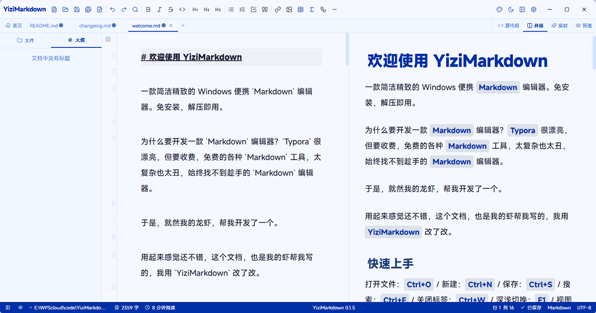
学术蓝（默认）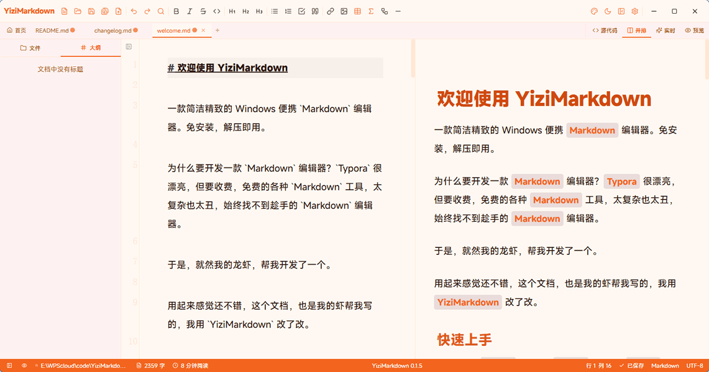
活力橙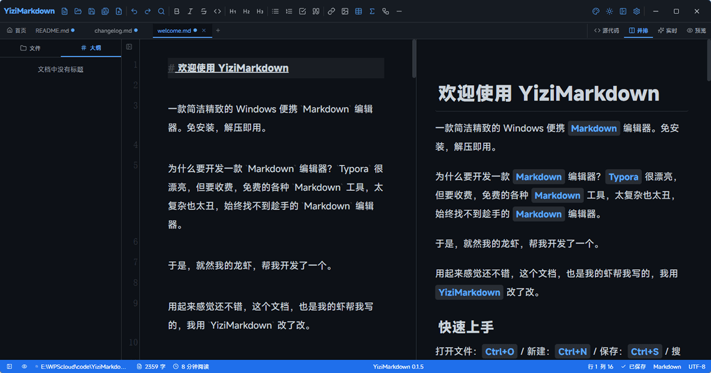
科技感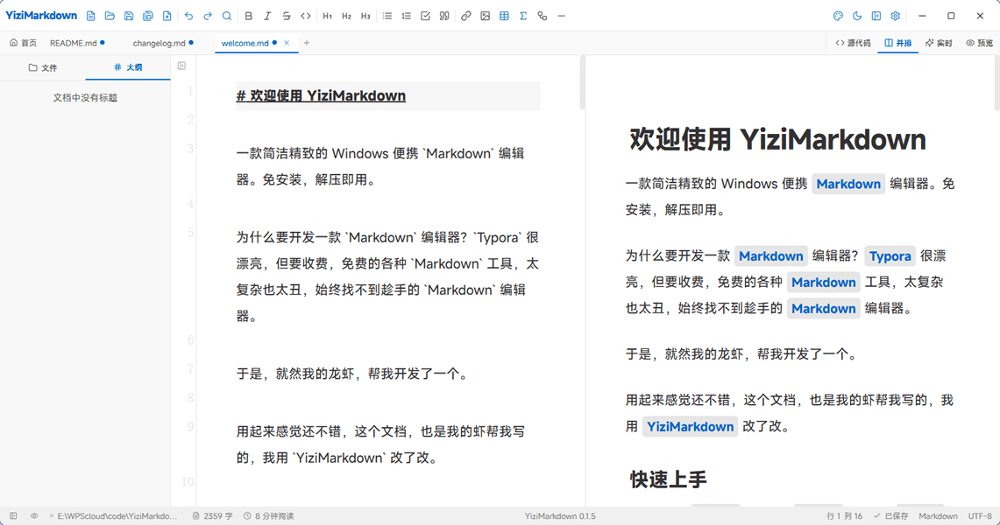
极简风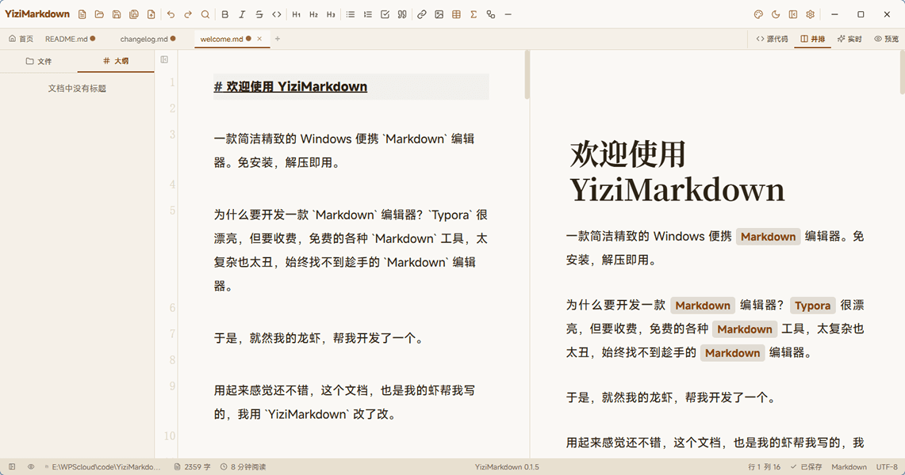
杂志感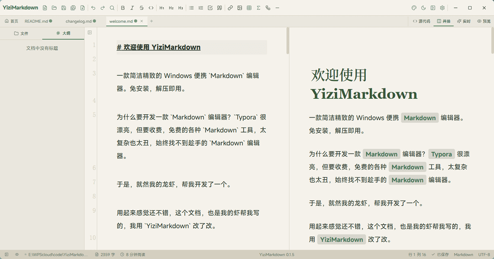
自然风 液态玻璃
液态玻璃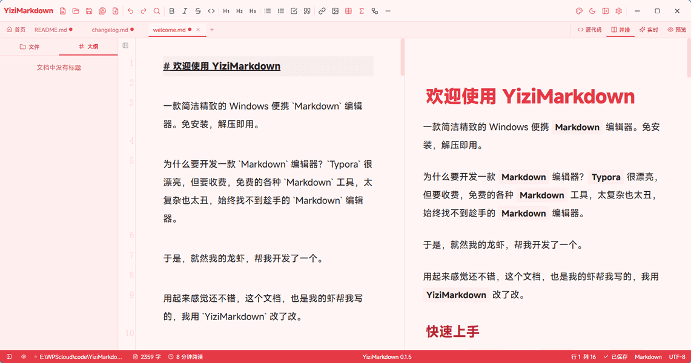
荔枝红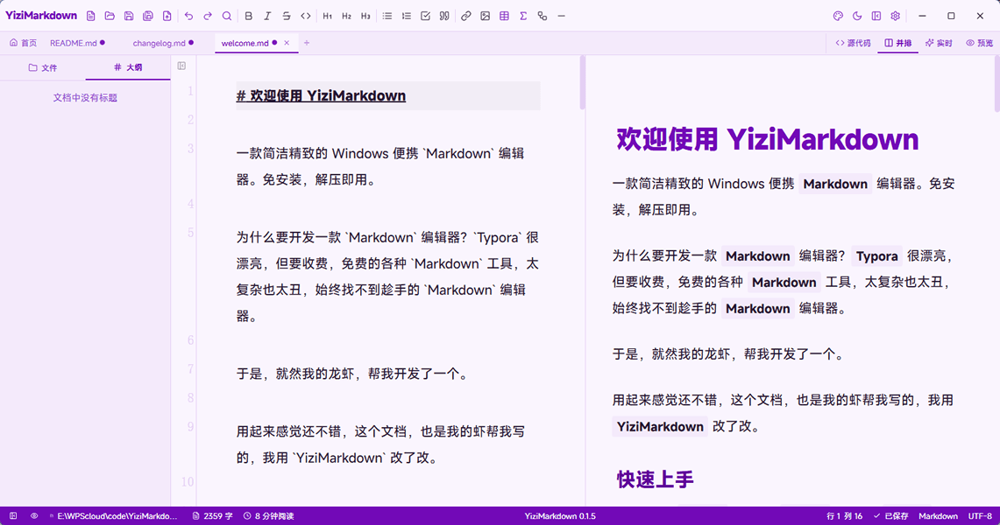
紫罗兰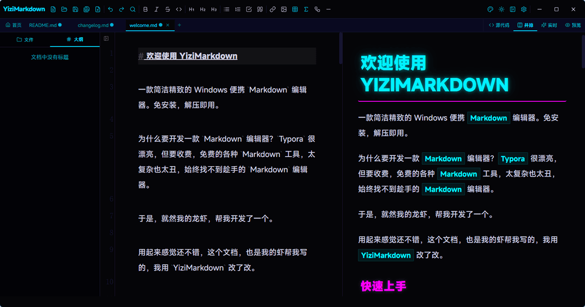
赛博朋克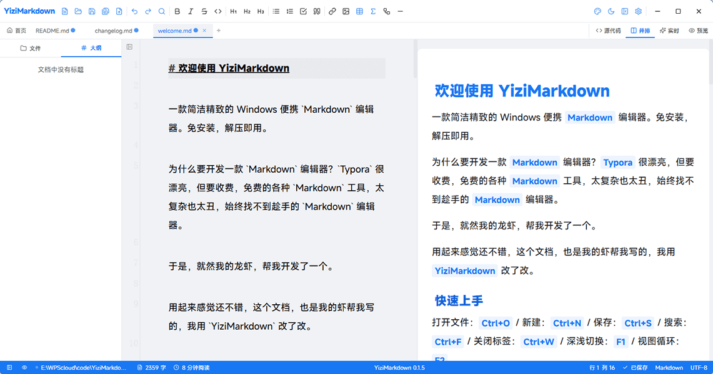
Facebook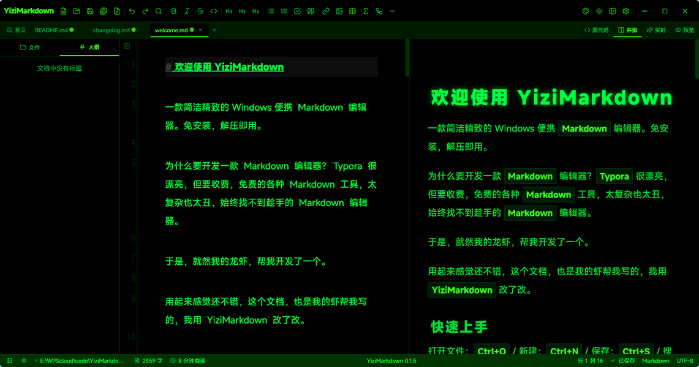
黑客帝国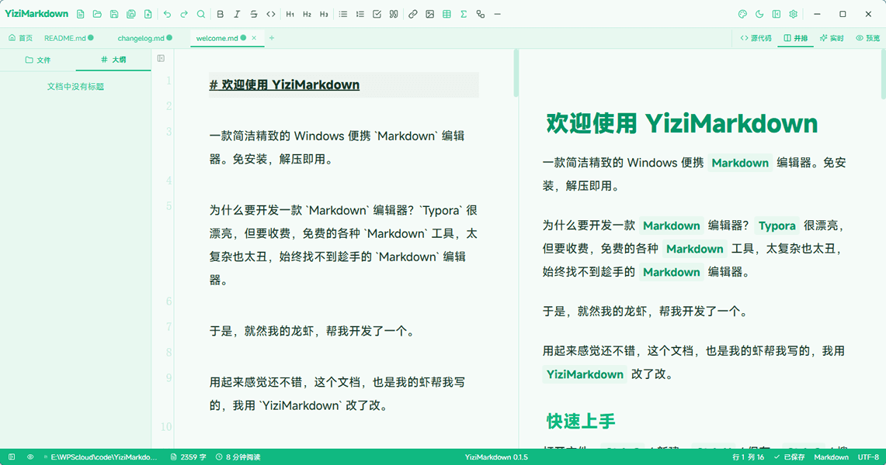
薄荷冰沙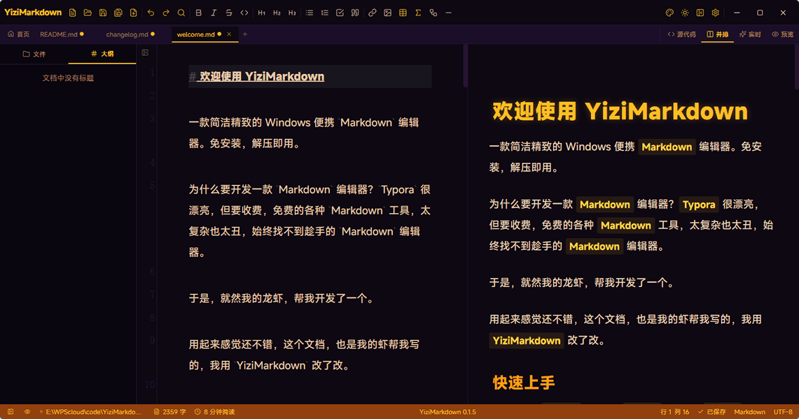
落日熔金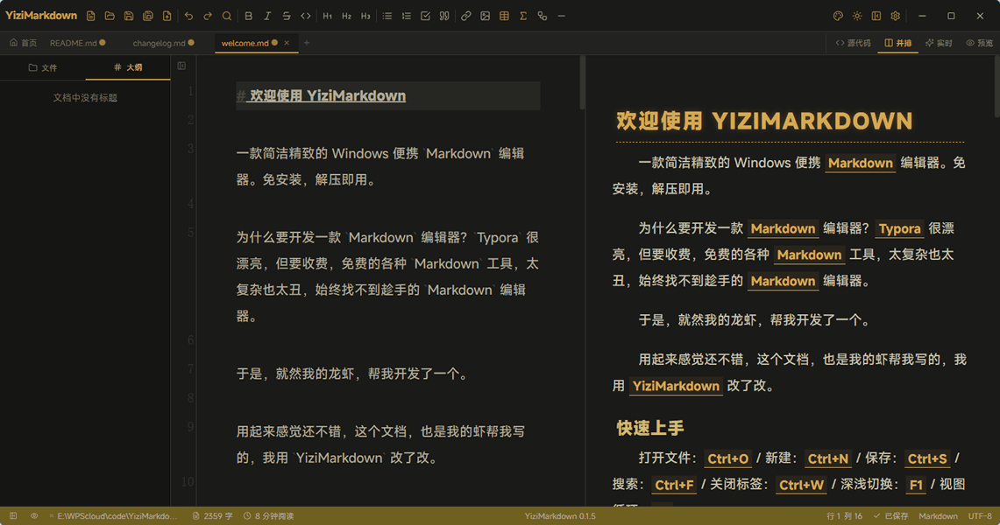
复古打字机在「设置 → 外观」中可切换主题、编辑主题名称、查看色板预览。按 F2 可快速切换深色 / 亮色模式。
字体与排版
在「设置 → 编辑器」中，可分别为源码与预览模式设置字体、字号（12~32px）与行高（1.2~3.0）。支持搜索系统已安装字体，也可手动输入 CSS font-family。
自定义主题与 CSS
- 自定义主题：在程序目录
themes/放入.css文件，重启后自动识别。CSS 需用.editor-content前缀限定范围，避免影响设置面板 - 自定义 CSS：在「设置 → 外观 → 自定义 CSS」中编辑，或直接改程序目录
user.css。它加载在所有主题之后，优先级最高
#设置详解
设置面板共 8 个分类，覆盖软件全部可配置项。
| 分类 | 主要能力 |
|---|---|
| 通用 | 界面语言（15 种）、自动保存间隔、文件关联、默认模板 |
| 外观 | 主题选择与管理、深色模式、自定义 CSS |
| 编辑器 | 源码 / 预览字体字号行高、实时模式动画、拼写检查 |
| AI | 供应商与模型、API 密钥、上下文轮数、引用上限 |
| 快捷键 | 可视化配置、按键录制、冲突检测、恢复默认 |
| 插件 | KaTeX 公式开关、Mermaid 图表主题与其他渲染插件 |
| 模板 | 新建 / 编辑 / 删除文档模板，指定默认模板 |
| 关于 | 版本信息、开源许可、相关链接 |
每个设置面板底部都有「恢复默认」按钮，可单独还原该分类。
界面语言
支持 15 种：简体中文（默认）、繁體中文、English、日本語、한국어、Deutsch、Français、Español、Português、Italiano、Polski、Nederlands、Türkçe、Svenska、Українська。在「设置 → 通用 → 界面语言」切换，即时生效，无需重启。
文档模板
- 从模板新建：点击工具栏「新建」旁的「从模板新建」，下拉选择模板
- 默认模板：在「设置 → 通用 → 默认模板」指定后，Ctrl+N 自动套用该结构
- 模板管理：在「设置 → 模板」中新建、编辑、删除
也可直接把 .md 文件放进程序目录 templates/。
#快捷键大全
按 F1 可随时唤出速查面板；所有快捷键均可在「设置 → 快捷键」自定义。
| 快捷键 | 功能 | 快捷键 | 功能 |
|---|---|---|---|
| Ctrl+N | 新建文件 | Ctrl+B | 粗体 |
| Ctrl+O | 打开文件 | Ctrl+I | 斜体 |
| Ctrl+S | 保存文件 | Ctrl+- | 删除线 |
| Ctrl+Shift+S | 另存为 | Ctrl++ | 行内代码 |
| Ctrl+W | 关闭标签 | Ctrl+1/2/3 | 一/二/三级标题 |
| Ctrl+H | 导出 HTML | Ctrl+. | 无序列表 |
| Ctrl+M | 导出 Markdown | Ctrl+0 | 有序列表 |
| Ctrl+F | 搜索 | Ctrl+' | 引用 |
| Ctrl+Z | 撤销 | Ctrl+K | 链接 |
| Ctrl+Y | 重做 | Ctrl+` | 代码块 |
| Ctrl+\\ | 切换侧边栏 | Ctrl+T | 插入表格 |
| Ctrl+Alt+P | 演示模式 | Ctrl+L | 分割线 |
| Ctrl+Shift+[ | 折叠标题 | Ctrl+Shift+] | 展开标题 |
| F1 | 快捷键大全 | Ins | 斜杠菜单 |
| F2 | 切换深浅模式 | F3 | 循环切换视图 |
| F12 | 开发者工具 | / 或 、 | 斜杠菜单 |
快捷键配置支持可视化面板、按键录制与冲突检测，改错了可一键恢复默认。配置文件保存在程序目录 keybindings.json。
#常见问题
遇到问题先查这里。
macOS 打开时提示「无法验证开发者」，怎么办？
这是 Gatekeeper 对未公证应用的正常拦截。YiziMarkdown 采用 ad-hoc 签名免费分发，首次打开请：在「访达」中按住 Control 点击（或触控板双指轻点）应用图标 → 选择「打开」→ 再点一次「打开」。也可在终端执行 xattr -dr com.apple.quarantine /Applications/YiziMarkdown.app 解除隔离标记。
保存 AI 密钥时弹出「想要访问您的钥匙串」并要求密码授权，正常吗？
正常，这是 macOS 安全机制。密钥通过系统钥匙串加密存储，不写入设置文件、不上传网络。首次访问需输入 Mac 登录密码或使用 Touch ID，点击「始终允许」后不再提示。
AI 聊天需要付费吗？
软件免费开源。AI 调用费用由你选择的服务商收取；使用 Ollama 本地模型则完全免费、无需联网。
换电脑或重装系统后，文档和 AI 密钥会丢吗？
文档不会丢：内容就是标准 .md 文件，放任意位置都能打开。AI 密钥不迁移：它只存在本机钥匙串，需在新机器重新配置一次。
v0.2.3 技能目录迁移后，自定义技能怎么办？
技能文件已迁至 ~/Documents/yizimarkdown/skills/。已有的自定义技能只要放在该目录下即可继续使用；内置技能在首次启动新版本时自动同步过去。
添加的自定义主题没有出现？
确认文件放在程序目录 themes/ 下、扩展名为 .css，然后重启程序。CSS 内部记得用 .editor-content 前缀限定范围。
预览中的图片不显示怎么办？
本地图片支持 jpg / png / gif / webp / svg / bmp，路径需为绝对路径；网络图片以 http / https 开头即可正常显示。
关联 .md 文件后图标没变？
Windows 图标缓存可能延迟刷新，尝试重启资源管理器或重启电脑。
如何恢复默认设置？
在各设置面板底部点击「恢复默认」按钮，按分类还原。
数据存储在哪？
数据分四个层面存放：
- 新建/未保存文件：在编辑器内存在 localStorage 缓存，下次打开软件时自动恢复、自动加载（不依赖系统文件路径，重启后仍在）
- 配置文件（主题、自动保存参数、快捷键绑定等）：同样存在 localStorage 缓存中
- API 密钥：保存在系统钥匙串（macOS Keychain / Windows 凭据管理器），不明文暴露、不上传网络——随时可在「设置 → AI」清除
- 技能文件（v0.2.3 起）：从应用目录迁移至用户目录
~/Documents/yizimarkdown/skills/，支持自定义，升级软件不会覆盖
中文标点需要按两次？
已在 v0.1.2 修复，请升级到最新版本。
#附录
程序目录结构
YiziMarkdown/
├── YiziMarkdown.exe # 主程序
├── readme.md # 项目说明
├── help.md # 帮助文档（软件内可查看）
├── welcome.md # 欢迎文档
├── changelog.md # 开发日志
├── user.css # 用户自定义样式（优先级最高）
├── keybindings.json # 快捷键配置
├── md-icon.ico # Markdown 文件关联图标
├── themes/ # 主题 CSS（放入 .css 即可扩展）
├── templates/ # 文档模板（含 Slide-Template.md）
└── skills/ # AI 技能提示词与 skills.json 清单v0.2.3 起，用户级技能目录为 ~/Documents/yizimarkdown/skills/。
获取帮助
- 软件内：按 F1 查快捷键，或打开
help.md - GitHub Issues：提交 Bug 与功能建议
- Releases：查看与下载历史版本
- 更新记录见首页「更新」板块